En bref
Blizzard a annoncé plus de 600 nouvelles recettes, sans publier la liste complète. Cette fiche rassemble les 179 recettes de Alchimie relevées dans les fichiers du jeu (client 1.60.1.70862, consultés le 12 novembre 2026). Les noms et les compétences requises viennent des fichiers du jeu. L’obtention indiquée « inconnu » reste à confirmer. Les tableaux sont groupés par palier de compétence requise. Quand l’obtention, la source ou la zone n’est pas indiquée dans les données consultées, la cellule le dit clairement. Aucun taux de butin n’est repris, aucun n’était indiqué.[1][2][4][3]
Points clés
- 179 recettes de Alchimie listées ci-dessous, d’après les fichiers du jeu (client 1.60.1.70862, 12 novembre 2026) ; l’obtention « inconnu » reste à confirmer.[4] Données du jeu (client 1.60.1.70862)
- Obtention indiquée dans les fichiers du jeu : formateur 46, butin 1, quête 4, réputation 7, inconnu 121.[4] Données du jeu (client 1.60.1.70862)
- Blizzard n’a pas publié la liste complète des recettes, ni les formateurs, vendeurs, prix ou taux de butin.[1][2]
- Composants de 179 recettes et 84 matériaux liés à leur fiche « où le trouver » (fichiers du jeu).[5] Données du jeu (client 1.60.1.70862)
Comment lire cette liste
Cette liste n’est pas officielle. Blizzard n’a pas publié le détail des recettes de ce métier (vendeurs, formateurs, monstres, zones, prix, taux de butin). Les noms et les compétences ci-dessous viennent des fichiers du jeu (client 1.60.1.70862). L’obtention « inconnu » reste à confirmer. Le nom français est celui de la localisation du jeu lorsqu’il a été trouvé ; à défaut, le nom anglais est utilisé dans les deux langues. « Formateur » couvre aussi les recettes indiquées comme apprises automatiquement avec le métier. Une page d’ensemble déjà en ligne, Recettes et plans avancés (/fr/metiers/recettes-et-plans-avances/), rappelle les règles officielles d’obtention et les recettes à butin déjà présentées par zone.[1][2][4][3]
- 179 recettes listées pour Alchimie.[4] Données du jeu (client 1.60.1.70862)
- Répartition dans les fichiers du jeu : formateur 46, butin 1, quête 4, réputation 7, inconnu 121.[4] Données du jeu (client 1.60.1.70862)
- Zone renseignée pour 1 recette(s) ; non indiquée pour les autres.[4] Données du jeu (client 1.60.1.70862)
Compétence 1–75 — 25 recettes (données du jeu)
| Recette | Compétence requise | Obtention | Source | Zone | Statut |
|---|---|---|---|---|---|
| Élixir de Force mineure | 1 | formateur | appris automatiquement avec le métier | non indiqué | données du jeu |
| Puits de mana | 1 | formateur | maître de métier (non nommé) | non indiqué | données du jeu |
| Élixir des arcanes mineur | 1 | formateur | appris automatiquement avec le métier | non indiqué | données du jeu |
| Élixir d’Esprit mineur | 15 | inconnu | non indiqué | non indiqué | données du jeu — obtention à confirmer |
| Élixir magesang mineur | 25 | inconnu | non indiqué | non indiqué | données du jeu — obtention à confirmer |
| Potion de soigneur mineure | 30 | inconnu | non indiqué | non indiqué | données du jeu — obtention à confirmer |
| Potion d’explosion de sorts mineure | 35 | inconnu | non indiqué | non indiqué | données du jeu — obtention à confirmer |
| Teinture céruléenne | 40 | formateur | maître de métier (non nommé) | non indiqué | données du jeu |
| Potion de frénésie mineure | 40 | inconnu | non indiqué | non indiqué | données du jeu — obtention à confirmer |
| Acide sulfurique | 40 | formateur | maître de métier (non nommé) | non indiqué | données du jeu |
| Elixir de défense mineure | 45 | formateur | maître de métier (non nommé) | non indiqué | données du jeu |
| Élixir de Force mineure | 45 | formateur | maître de métier (non nommé) | non indiqué | données du jeu |
| Élixir des clercs mineur | 45 | inconnu | non indiqué | non indiqué | données du jeu — obtention à confirmer |
| Elixir d'Agilité mineure | 50 | inconnu | non indiqué | non indiqué | données du jeu — obtention à confirmer |
| Elixir de Robustesse mineure | 50 | inconnu | non indiqué | non indiqué | données du jeu — obtention à confirmer |
| Potion de soins mineure décolorée | 50 | quête | My First Real Potion , Wild Eyes | non indiqué | données du jeu |
| Élixir de sang de Troll mineur | 50 | formateur | maître de métier (non nommé) | non indiqué | données du jeu |
| Potion de mana mineure | 55 | formateur | maître de métier (non nommé) | non indiqué | données du jeu |
| Potion de régénération mineure | 60 | formateur | maître de métier (non nommé) | non indiqué | données du jeu |
| Potion de Rage | 60 | inconnu | non indiqué | non indiqué | données du jeu — obtention à confirmer |
| Potion de Rapidité | 60 | inconnu | non indiqué | non indiqué | données du jeu — obtention à confirmer |
| Élixir d’Esprit inférieur | 65 | inconnu | non indiqué | non indiqué | données du jeu — obtention à confirmer |
| Huile de bouche-noire | 75 | formateur | maître de métier (non nommé) | non indiqué | données du jeu |
| Potion de soins inférieure décolorée | 75 | formateur | maître de métier (non nommé) | non indiqué | données du jeu |
| Élixir magesang inférieur | 75 | inconnu | non indiqué | non indiqué | données du jeu — obtention à confirmer |
Compétence 76–150 — 33 recettes (données du jeu)
| Recette | Compétence requise | Obtention | Source | Zone | Statut |
|---|---|---|---|---|---|
| Potion de soigneur inférieure | 80 | inconnu | non indiqué | non indiqué | données du jeu — obtention à confirmer |
| Potion d’explosion de sorts inférieure | 85 | inconnu | non indiqué | non indiqué | données du jeu — obtention à confirmer |
| Breuvage des langages | 90 | formateur | maître de métier (non nommé) | non indiqué | données du jeu |
| Elixir de Taille de géant | 90 | inconnu | non indiqué | non indiqué | données du jeu — obtention à confirmer |
| Potion de frénésie inférieure | 90 | inconnu | non indiqué | non indiqué | données du jeu — obtention à confirmer |
| Élixir d’Intelligence inférieure | 95 | inconnu | non indiqué | non indiqué | données du jeu — obtention à confirmer |
| Élixir des clercs inférieur | 95 | inconnu | non indiqué | non indiqué | données du jeu — obtention à confirmer |
| Potion de protection contre le Sacré | 100 | inconnu | non indiqué | non indiqué | données du jeu — obtention à confirmer |
| Breuvage de respiration aquatique | 110 | formateur | maître de métier (non nommé) | non indiqué | données du jeu |
| Elixir de Sagesse | 110 | formateur | maître de métier (non nommé) | non indiqué | données du jeu |
| Potion de résistance à la magie mineure | 110 | inconnu | non indiqué | non indiqué | données du jeu — obtention à confirmer |
| Élixir d’Esprit | 115 | inconnu | non indiqué | non indiqué | données du jeu — obtention à confirmer |
| Élixir des arcanes inférieur | 120 | inconnu | non indiqué | non indiqué | données du jeu — obtention à confirmer |
| Potion de purification du poison | 120 | inconnu | non indiqué | non indiqué | données du jeu — obtention à confirmer |
| Potion de Nage rapide | 120 | formateur | maître de métier (non nommé) | non indiqué | données du jeu |
| Teinture magenta | 124 | formateur | maître de métier (non nommé) | non indiqué | données du jeu |
| Potion de soins décolorée | 125 | formateur | maître de métier (non nommé) | non indiqué | données du jeu |
| Potion de soigneur | 130 | inconnu | non indiqué | non indiqué | données du jeu — obtention à confirmer |
| Élixir d’Intelligence | 135 | inconnu | non indiqué | non indiqué | données du jeu — obtention à confirmer |
| Potion de mana inférieure | 135 | formateur | maître de métier (non nommé) | non indiqué | données du jeu |
| Potion de protection contre l'Ombre | 135 | inconnu | non indiqué | non indiqué | données du jeu — obtention à confirmer |
| Potion d’explosion de sorts | 135 | inconnu | non indiqué | non indiqué | données du jeu — obtention à confirmer |
| Elixir d'Agilité inférieure | 140 | inconnu | non indiqué | non indiqué | données du jeu — obtention à confirmer |
| Fermenteur | 140 | butin | Rath'mael | Ruines de Lordaeron | données du jeu |
| Potion de frénésie | 140 | inconnu | non indiqué | non indiqué | données du jeu — obtention à confirmer |
| Élixir de sang de Troll inférieur | 140 | formateur | maître de métier (non nommé) | non indiqué | données du jeu |
| Élixir des clercs | 145 | inconnu | non indiqué | non indiqué | données du jeu — obtention à confirmer |
| Élixir de défense inférieure | 145 | formateur | maître de métier (non nommé) | non indiqué | données du jeu |
| Huile de feu | 145 | formateur | maître de métier (non nommé) | non indiqué | données du jeu |
| Élixir de robustesse | 150 | inconnu | non indiqué | non indiqué | données du jeu — obtention à confirmer |
| Élixir de force d’ogre | 150 | inconnu | non indiqué | non indiqué | données du jeu — obtention à confirmer |
| Élixir de Force | 150 | inconnu | non indiqué | non indiqué | données du jeu — obtention à confirmer |
| Potion de libre action | 150 | inconnu | non indiqué | non indiqué | données du jeu — obtention à confirmer |
Compétence 151–225 — 39 recettes (données du jeu)
| Recette | Compétence requise | Obtention | Source | Zone | Statut |
|---|---|---|---|---|---|
| Élixir de puissance du feu | 155 | formateur | maître de métier (non nommé) | non indiqué | données du jeu |
| Élixir d’Esprit supérieur | 165 | inconnu | non indiqué | non indiqué | données du jeu — obtention à confirmer |
| Potion de protection contre le Feu | 165 | inconnu | non indiqué | non indiqué | données du jeu — obtention à confirmer |
| Potion de soins supérieure décolorée | 165 | formateur | maître de métier (non nommé) | non indiqué | données du jeu |
| Huile des ténèbres | 165 | inconnu | non indiqué | non indiqué | données du jeu — obtention à confirmer |
| Potion de mana | 170 | formateur | maître de métier (non nommé) | non indiqué | données du jeu |
| Élixir de robustesse inférieure | 175 | inconnu | non indiqué | non indiqué | données du jeu — obtention à confirmer |
| Potion de Grande rage | 175 | inconnu | non indiqué | non indiqué | données du jeu — obtention à confirmer |
| Élixir magesang supérieur | 175 | inconnu | non indiqué | non indiqué | données du jeu — obtention à confirmer |
| Potion d'Invisibilité inférieure | 175 | formateur | maître de métier (non nommé) | non indiqué | données du jeu |
| Breuvage de marche sur l’eau | 180 | formateur | maître de métier (non nommé) | non indiqué | données du jeu |
| Potion de soigneur supérieure | 180 | inconnu | non indiqué | non indiqué | données du jeu — obtention à confirmer |
| Élixir de sang de Troll | 180 | inconnu | non indiqué | non indiqué | données du jeu — obtention à confirmer |
| Potion d’explosion de sorts supérieure | 185 | quête | A New Need for Shadow Protection | non indiqué | données du jeu |
| Elixir de Puissance du givre | 190 | inconnu | non indiqué | non indiqué | données du jeu — obtention à confirmer |
| Potion de protection contre le Givre | 190 | inconnu | non indiqué | non indiqué | données du jeu — obtention à confirmer |
| Potion de frénésie supérieure | 190 | quête | A New Need for Shadow Protection | non indiqué | données du jeu |
| Potion de protection contre la Nature | 190 | inconnu | non indiqué | non indiqué | données du jeu — obtention à confirmer |
| Breuvage de détection de l’invisibilité inférieure | 195 | inconnu | non indiqué | non indiqué | données du jeu — obtention à confirmer |
| Elixir d'Agilité | 195 | formateur | maître de métier (non nommé) | non indiqué | données du jeu |
| Élixir des clercs supérieur | 195 | inconnu | non indiqué | non indiqué | données du jeu — obtention à confirmer |
| Potion de sens de prédateur | 195 | inconnu | non indiqué | non indiqué | données du jeu — obtention à confirmer |
| Élixir de robustesse supérieure | 200 | inconnu | non indiqué | non indiqué | données du jeu — obtention à confirmer |
| Huile glaciale | 200 | inconnu | non indiqué | non indiqué | données du jeu — obtention à confirmer |
| Breuvage de révélation | 200 | formateur | maître de métier (non nommé) | non indiqué | données du jeu |
| Élixir de défense | 205 | formateur | maître de métier (non nommé) | non indiqué | données du jeu |
| Breuvage d’œil de chat | 210 | formateur | maître de métier (non nommé) | non indiqué | données du jeu |
| Carburant de fusée gobelin | 210 | inconnu | non indiqué | non indiqué | données du jeu — obtention à confirmer |
| Potion de mana supérieure | 210 | formateur | maître de métier (non nommé) | non indiqué | données du jeu |
| Potion de résistance à la magie | 210 | inconnu | non indiqué | non indiqué | données du jeu — obtention à confirmer |
| Huile d'immolation | 210 | formateur | maître de métier (non nommé) | non indiqué | données du jeu |
| Potion de Bouclier de pierre inférieure | 215 | quête | Liquid Stone | non indiqué | données du jeu |
| Potion de Restauration | 215 | formateur | maître de métier (non nommé) | non indiqué | données du jeu |
| Breuvage de respiration aquatique supérieure | 220 | formateur | maître de métier (non nommé) | non indiqué | données du jeu |
| Potion de soins excellente décolorée | 220 | formateur | maître de métier (non nommé) | non indiqué | données du jeu |
| Teinture viridienne | 220 | formateur | maître de métier (non nommé) | non indiqué | données du jeu |
| Pierre philosophale | 225 | inconnu | non indiqué | non indiqué | données du jeu — obtention à confirmer |
| Transmutation de mithril en vrai-argent | 225 | inconnu | non indiqué | non indiqué | données du jeu — obtention à confirmer |
| Potion de sauvageonne | 225 | inconnu | non indiqué | non indiqué | données du jeu — obtention à confirmer |
Compétence 226–300 — 82 recettes (données du jeu)
| Recette | Compétence requise | Obtention | Source | Zone | Statut |
|---|---|---|---|---|---|
| Potion de soigneur excellente | 230 | inconnu | non indiqué | non indiqué | données du jeu — obtention à confirmer |
| Breuvage de détection des morts-vivants | 235 | formateur | maître de métier (non nommé) | non indiqué | données du jeu |
| Potion de sommeil sans rêve | 235 | formateur | maître de métier (non nommé) | non indiqué | données du jeu |
| Potion d'invisibilité | 235 | inconnu | non indiqué | non indiqué | données du jeu — obtention à confirmer |
| Potion d’explosion de sorts excellente | 235 | inconnu | non indiqué | non indiqué | données du jeu — obtention à confirmer |
| Elixir des arcanes | 240 | formateur | maître de métier (non nommé) | non indiqué | données du jeu |
| Breuvage de vision de rêve | 240 | inconnu | non indiqué | non indiqué | données du jeu — obtention à confirmer |
| Elixir d'Intelligence supérieure | 240 | formateur | maître de métier (non nommé) | non indiqué | données du jeu |
| Don d'Arthas | 240 | inconnu | non indiqué | non indiqué | données du jeu — obtention à confirmer |
| Potion de frénésie excellente | 240 | inconnu | non indiqué | non indiqué | données du jeu — obtention à confirmer |
| Potion de feu draconique | 245 | inconnu | non indiqué | non indiqué | données du jeu — obtention à confirmer |
| Elixir d'Agilité supérieure | 245 | formateur | maître de métier (non nommé) | non indiqué | données du jeu |
| Élixir de Force supérieure | 245 | inconnu | non indiqué | non indiqué | données du jeu — obtention à confirmer |
| Teinture fantôme | 245 | inconnu | non indiqué | non indiqué | données du jeu — obtention à confirmer |
| Huile de pierre-écaille | 245 | formateur | maître de métier (non nommé) | non indiqué | données du jeu |
| Eau-de-feu distillée | 250 | inconnu | non indiqué | non indiqué | données du jeu — obtention à confirmer |
| Élixir de puissance sacrée | 250 | inconnu | non indiqué | non indiqué | données du jeu — obtention à confirmer |
| Elixir de Puissance de l'ombre | 250 | inconnu | non indiqué | non indiqué | données du jeu — obtention à confirmer |
| Élixir de la phalange | 250 | inconnu | non indiqué | non indiqué | données du jeu — obtention à confirmer |
| Potion d'invulnérabilité limitée | 250 | inconnu | non indiqué | non indiqué | données du jeu — obtention à confirmer |
| Potion de soins majeure décolorée | 250 | inconnu | non indiqué | non indiqué | données du jeu — obtention à confirmer |
| Potion de tueur de démons | 250 | inconnu | non indiqué | non indiqué | données du jeu — obtention à confirmer |
| Breuvage de détection des démons | 255 | formateur | maître de métier (non nommé) | non indiqué | données du jeu |
| Potion de rage puissante | 255 | inconnu | non indiqué | non indiqué | données du jeu — obtention à confirmer |
| Potion de mana excellente | 260 | inconnu | non indiqué | non indiqué | données du jeu — obtention à confirmer |
| Potion de brume caustique | 265 | inconnu | non indiqué | non indiqué | données du jeu — obtention à confirmer |
| Élixir de défense supérieure | 265 | inconnu | non indiqué | non indiqué | données du jeu — obtention à confirmer |
| Elixir des Sages | 270 | inconnu | non indiqué | non indiqué | données du jeu — obtention à confirmer |
| Pierre d'alchimiste | 275 | inconnu | non indiqué | non indiqué | données du jeu — obtention à confirmer |
| Elixir de Force de brute | 275 | inconnu | non indiqué | non indiqué | données du jeu — obtention à confirmer |
| Élixir de ruse | 275 | inconnu | non indiqué | non indiqué | données du jeu — obtention à confirmer |
| Élixir de férocité | 275 | inconnu | non indiqué | non indiqué | données du jeu — obtention à confirmer |
| Élixir des sages | 275 | inconnu | non indiqué | non indiqué | données du jeu — obtention à confirmer |
| Élixir de la baleine | 275 | inconnu | non indiqué | non indiqué | données du jeu — obtention à confirmer |
| Potion de sommeil sans rêve supérieure | 275 | réputation | Tribu Zandalar (Amical) | non indiqué | données du jeu |
| Elixir magesang | 275 | réputation | Tribu Zandalar (Révéré) | non indiqué | données du jeu |
| Potion de sang envenimé | 275 | inconnu | non indiqué | non indiqué | données du jeu — obtention à confirmer |
| Transmutation de l'Air en Feu | 275 | réputation | Aube d'argent (Honoré) | non indiqué | données du jeu |
| Transmutation d'arcanite | 275 | inconnu | non indiqué | non indiqué | données du jeu — obtention à confirmer |
| Transmutation de la Terre en Vie | 275 | inconnu | non indiqué | non indiqué | données du jeu — obtention à confirmer |
| Transmutation de la Terre en Eau | 275 | réputation | Les Grumegueules (Amical) | non indiqué | données du jeu |
| Transmutation du Feu en Terre | 275 | inconnu | non indiqué | non indiqué | données du jeu — obtention à confirmer |
| Transmutation : légionite | 275 | inconnu | non indiqué | non indiqué | données du jeu — obtention à confirmer |
| Transmutation de la Vie en Terre | 275 | inconnu | non indiqué | non indiqué | données du jeu — obtention à confirmer |
| Transmutation du Non-mort en Eau | 275 | inconnu | non indiqué | non indiqué | données du jeu — obtention à confirmer |
| Transmutation de l'Eau en Air | 275 | inconnu | non indiqué | non indiqué | données du jeu — obtention à confirmer |
| Transmutation de l'Eau en Non-mort | 275 | inconnu | non indiqué | non indiqué | données du jeu — obtention à confirmer |
| Elixir de la Mangouste | 280 | inconnu | non indiqué | non indiqué | données du jeu — obtention à confirmer |
| Élixir de la chouette | 280 | inconnu | non indiqué | non indiqué | données du jeu — obtention à confirmer |
| Potion de Bouclier de pierre supérieure | 280 | inconnu | non indiqué | non indiqué | données du jeu — obtention à confirmer |
| Potion de soigneur majeure | 280 | inconnu | non indiqué | non indiqué | données du jeu — obtention à confirmer |
| Potion de tueur de bêtes | 280 | inconnu | non indiqué | non indiqué | données du jeu — obtention à confirmer |
| Potion de purge d’élémentaires | 280 | inconnu | non indiqué | non indiqué | données du jeu — obtention à confirmer |
| Élixir de puissance de la nature | 285 | inconnu | non indiqué | non indiqué | données du jeu — obtention à confirmer |
| Élixir de régénération maudite | 285 | inconnu | non indiqué | non indiqué | données du jeu — obtention à confirmer |
| Elixir des arcanes supérieur | 285 | inconnu | non indiqué | non indiqué | données du jeu — obtention à confirmer |
| Potion de vive action | 285 | réputation | Tribu Zandalar (Exalté) | non indiqué | données du jeu |
| Potion d’explosion de sorts majeure | 285 | inconnu | non indiqué | non indiqué | données du jeu — obtention à confirmer |
| Potion de purification | 285 | inconnu | non indiqué | non indiqué | données du jeu — obtention à confirmer |
| Potion de protection contre les Arcanes supérieure | 290 | inconnu | non indiqué | non indiqué | données du jeu — obtention à confirmer |
| Potion de Protection contre le Feu supérieure | 290 | inconnu | non indiqué | non indiqué | données du jeu — obtention à confirmer |
| Potion de protection contre le Givre supérieure | 290 | inconnu | non indiqué | non indiqué | données du jeu — obtention à confirmer |
| Potion de protection contre le Sacré supérieure | 290 | inconnu | non indiqué | non indiqué | données du jeu — obtention à confirmer |
| Potion de protection contre la Nature supérieure | 290 | inconnu | non indiqué | non indiqué | données du jeu — obtention à confirmer |
| Potion de protection contre l'Ombre supérieure | 290 | inconnu | non indiqué | non indiqué | données du jeu — obtention à confirmer |
| Potion de frénésie majeure | 290 | inconnu | non indiqué | non indiqué | données du jeu — obtention à confirmer |
| Élixir de sang de Troll majeur | 290 | réputation | Tribu Zandalar (Honoré) | non indiqué | données du jeu |
| Potion de mana majeure | 295 | inconnu | non indiqué | non indiqué | données du jeu — obtention à confirmer |
| laboratoire d’alchimie | 300 | inconnu | non indiqué | non indiqué | données du jeu — obtention à confirmer |
| Flacon de résistance chromatique | 300 | inconnu | non indiqué | non indiqué | données du jeu — obtention à confirmer |
| Flacon de sagesse distillée | 300 | inconnu | non indiqué | non indiqué | données du jeu — obtention à confirmer |
| Flacon de justesse naturelle | 300 | inconnu | non indiqué | non indiqué | données du jeu — obtention à confirmer |
| Flacon d’agression naturelle | 300 | inconnu | non indiqué | non indiqué | données du jeu — obtention à confirmer |
| Flacon de précision naturelle | 300 | inconnu | non indiqué | non indiqué | données du jeu — obtention à confirmer |
| Flacon de rapidité naturelle | 300 | inconnu | non indiqué | non indiqué | données du jeu — obtention à confirmer |
| Flacon de pétrification | 300 | inconnu | non indiqué | non indiqué | données du jeu — obtention à confirmer |
| Flacon de pouvoir suprême | 300 | inconnu | non indiqué | non indiqué | données du jeu — obtention à confirmer |
| Flacon des Titans | 300 | inconnu | non indiqué | non indiqué | données du jeu — obtention à confirmer |
| Folie mojo des Gurubashi | 300 | formateur | maître de métier (non nommé) | non indiqué | données du jeu |
| Potion de régénération majeure | 300 | inconnu | non indiqué | non indiqué | données du jeu — obtention à confirmer |
| Ecaille d'Onyxia raffinée | 300 | formateur | maître de métier (non nommé) | non indiqué | données du jeu |
| Transmutation : Feu élémentaire | 300 | réputation | Confrérie du thorium (Amical) | non indiqué | données du jeu |
Matériaux : où les trouver
Les 84 matériaux demandés par les 179 recettes de cette page, rangés par famille, avec le nombre de recettes qui les utilisent. Chaque matériau mène à sa fiche « où le trouver » ; le tableau repliable donne les composants de chaque recette. Composants lus dans les fichiers du jeu (client 1.60.1.70862). Toutes les familles : Matériaux : où les trouver.[5] Données du jeu (client 1.60.1.70862)
Minerais, barres et pierres — 7
 Barre de fer1
Barre de fer1 Barre de mithril1
Barre de mithril1 Barre de thorium1
Barre de thorium1 Barre de thorium lourd1
Barre de thorium lourd1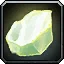
Minerai de mithril1 Minerai de thorium1
Minerai de thorium1 Pyrite1
Pyrite1
Herbes — 36
 Feuillerêve23
Feuillerêve23 Dorépine15
Dorépine15 Sang-royal14
Sang-royal14 Gromsang13
Gromsang13 Mage royal11
Mage royal11 Soleillette11
Soleillette11 Fleur de feu10
Fleur de feu10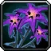
Fleur de peste10 Moustache de Khadgar10
Moustache de Khadgar10 Pacifique10
Pacifique10 Sauge-argent des montagnes10
Sauge-argent des montagnes10 Aciérite sauvage9
Aciérite sauvage9 Lotus pourpre9
Lotus pourpre9 Pâlerette9
Pâlerette9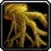
Terrestrine9 Aveuglette8
Aveuglette8 Hivernale8
Hivernale8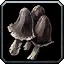
Champignon fantôme7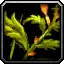
Doulourante7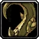
Eglantine7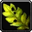
Etouffante7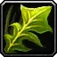
Feuillargent7 Larmes d'Arthas7
Larmes d'Arthas7 Lotus noir7
Lotus noir7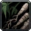
Sansam doré7 Calot de glace6
Calot de glace6 Chardonnier6
Chardonnier6- Vietérule5
 Lotus mortifère4
Lotus mortifère4 Tombeline4
Tombeline4 Hantefeuille2
Hantefeuille2 Sauge démoniaque2
Sauge démoniaque2 Chaperose1
Chaperose1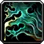
Lichen à volants1- Sauvageonne1
 Stranglevigne1
Stranglevigne1
Cuirs, peaux et écailles — 1
Viandes et ingrédients de cuisine — 1
Éléments et matériaux d’enchantement — 14
 Essence d'eau3
Essence d'eau3 Essence de terre3
Essence de terre3- Coeur de fauve2
 Essence d'air2
Essence d'air2 Essence de feu2
Essence de feu2 Essence de vie2
Essence de vie2 Terre élémentaire2
Terre élémentaire2 Air élémentaire1
Air élémentaire1 Coeur de feu1
Coeur de feu1 Eau élémentaire1
Eau élémentaire1- Essence de non-mort1
 Feu élémentaire1
Feu élémentaire1 Ichor de non-mort1
Ichor de non-mort1 Poussière de rêve1
Poussière de rêve1
Fils, fioles, teintures et autres composants — 20
 Fiole de cristal67
Fiole de cristal67 Fiole plombée48
Fiole plombée48 Fiole vide37
Fiole vide37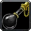
Fiole imprégnée11 Huile de bouche-noire4
Huile de bouche-noire4 Huile de pierre-écaille4
Huile de pierre-écaille4 Huile de feu3
Huile de feu3 Vitriol noir2
Vitriol noir2 Anguille pierre-écaille1
Anguille pierre-écaille1- Bouche-noire huileux1
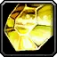
Cristal des arcanes1 Gangrecristal1
Gangrecristal1 Grand croc1
Grand croc1 Grande glande à venin1
Grande glande à venin1 Griffe aiguisée1
Griffe aiguisée1- Lutjan de nagefeu1
 Mojo puissant1
Mojo puissant1 Mojo écrasant1
Mojo écrasant1 Petit sac de flammes1
Petit sac de flammes1 Teinture pourpre1
Teinture pourpre1
Objets utilisés comme composants — 5
Composants de chaque recette · 179 recettes
| Recette | Composants |
|---|---|
| Élixir de Force mineure | 1× Feuillargent, 1× Fiole vide |
| Puits de mana | 1× Pacifique, 1× Fiole vide |
| Élixir des arcanes mineur | 1× Pacifique, 1× Fiole vide |
| Élixir d’Esprit mineur | 2× Terrestrine, 1× Pacifique, 1× Fiole vide |
| Élixir magesang mineur | 2× Mage royal, 1× Fiole vide |
| Potion de soigneur mineure | 2× Mage royal, 1× Doulourante, 1× Fiole vide |
| Potion d’explosion de sorts mineure | 1× Feuillargent, 1× Pacifique, 1× Fiole vide |
| Teinture céruléenne | 2× Lichen à volants, 1× Fiole vide |
| Potion de frénésie mineure | 1× Terrestrine, 1× Feuillargent, 1× Fiole vide |
| Acide sulfurique | 2× Pyrite, 1× Fiole vide |
| Elixir de défense mineure | 1× Feuillargent, 1× Pacifique, 1× Fiole vide |
| Élixir de Force mineure | 1× Terrestrine, 1× Feuillargent, 1× Fiole vide |
| Élixir des clercs mineur | 2× Mage royal, 1× Doulourante, 1× Fiole vide |
| Elixir d'Agilité mineure | 1× Chardonnier, 1× Feuillargent, 1× Fiole vide |
| Elixir de Robustesse mineure | 2× Terrestrine, 1× Pacifique, 1× Fiole vide |
| Potion de soins mineure décolorée | 1× Fiole vide, 1× Pacifique, 1× Oeil de murloc |
| Élixir de sang de Troll mineur | 1× Pacifique, 2× Terrestrine, 1× Fiole vide |
| Potion de mana mineure | 1× Mage royal, 1× Pacifique, 1× Fiole vide |
| Potion de régénération mineure | 2× Mage royal, 1× Pacifique, 1× Fiole vide |
| Potion de Rage | 1× Griffe aiguisée, 1× Eglantine, 1× Fiole vide |
| Potion de Rapidité | 1× Chardonnier, 1× Eglantine, 1× Fiole vide |
| Élixir d’Esprit inférieur | 2× Aciérite sauvage, 1× Mage royal, 1× Fiole vide |
| Huile de bouche-noire | 2× Bouche-noire huileux, 1× Fiole vide |
| Potion de soins inférieure décolorée | 1× Fiole vide, 1× Eglantine, 1× Oeil de murloc |
| Élixir magesang inférieur | 3× Sang-royal, 1× Fiole vide |
| Potion de soigneur inférieure | 2× Sang-royal, 2× Vietérule, 1× Fiole plombée |
| Potion d’explosion de sorts inférieure | 1× Mage royal, 2× Feuillargent, 1× Fiole vide |
| Breuvage des langages | 2× Terrestrine, 2× Mage royal, 1× Fiole vide |
| Elixir de Taille de géant | 1× Poisson déviant, 1× Terrestrine, 1× Fiole vide |
| Potion de frénésie inférieure | 1× Eglantine, 2× Terrestrine, 1× Fiole vide |
| Élixir d’Intelligence inférieure | 3× Sang-royal, 1× Fiole plombée |
| Élixir des clercs inférieur | 2× Sang-royal, 2× Vietérule, 1× Fiole plombée |
| Potion de protection contre le Sacré | 1× Doulourante, 1× Chardonnier, 1× Fiole vide |
| Breuvage de respiration aquatique | 1× Etouffante, 2× Huile de bouche-noire, 1× Fiole vide |
| Elixir de Sagesse | 1× Mage royal, 2× Eglantine, 1× Fiole vide |
| Potion de résistance à la magie mineure | 3× Mage royal, 1× Aciérite sauvage, 1× Fiole vide |
| Élixir d’Esprit | 3× Moustache de Khadgar, 1× Sang-royal, 1× Fiole plombée |
| Élixir des arcanes inférieur | 1× Sang-royal, 1× Dorépine, 1× Fiole de cristal ou 4× Sang-royal, 1× Fiole plombée |
| Potion de purification du poison | 1× Grande glande à venin, 1× Doulourante, 1× Fiole plombée |
| Potion de Nage rapide | 1× Chardonnier, 1× Huile de bouche-noire, 1× Fiole vide |
| Teinture magenta | 2× Chaperose, 1× Fiole plombée |
| Potion de soins décolorée | 1× Fiole plombée, 1× Doulourante, 1× Oeil de murloc |
| Potion de soigneur | 2× Hivernale, 2× Fleur de feu, 1× Fiole plombée |
| Élixir d’Intelligence | 3× Moustache de Khadgar, 1× Fiole plombée |
| Potion de mana inférieure | 1× Mage royal, 1× Etouffante, 1× Fiole vide |
| Potion de protection contre l'Ombre | 1× Tombeline, 1× Sang-royal, 1× Fiole plombée |
| Potion d’explosion de sorts | 1× Aciérite sauvage, 1× Tombeline, 1× Fiole vide |
| Elixir d'Agilité inférieure | 1× Aciérite sauvage, 1× Chardonnier, 1× Fiole plombée |
| Fermenteur | 1× Fiole plombée, 1× Sang-royal, 1× Chardonnier |
| Potion de frénésie | 2× Pâlerette, 2× Eglantine, 1× Fiole plombée |
| Élixir de sang de Troll inférieur | 2× Doulourante, 2× Eglantine, 1× Fiole plombée |
| Élixir des clercs | 2× Hivernale, 2× Fleur de feu, 1× Fiole plombée |
| Élixir de défense inférieure | 1× Aciérite sauvage, 1× Etouffante, 1× Fiole plombée |
| Huile de feu | 2× Lutjan de nagefeu, 1× Fiole vide |
| Élixir de robustesse | 4× Dorépine, 1× Fiole plombée |
| Élixir de force d’ogre | 1× Terrestrine, 1× Sang-royal, 1× Fiole plombée |
| Élixir de Force | 3× Aciérite sauvage, 1× Dorépine, 1× Fiole plombée |
| Potion de libre action | 2× Huile de bouche-noire, 1× Etouffante, 1× Fiole plombée |
| Élixir de puissance du feu | 2× Huile de feu, 1× Sang-royal, 1× Fiole plombée |
| Élixir d’Esprit supérieur | 3× Larmes d'Arthas, 2× Lotus pourpre, 1× Fiole de cristal |
| Potion de protection contre le Feu | 1× Petit sac de flammes, 1× Huile de feu, 1× Fiole plombée |
| Potion de soins supérieure décolorée | 1× Fiole plombée, 1× Sang-royal, 1× Oeil de murloc |
| Huile des ténèbres | 4× Pâlerette, 4× Tombeline, 1× Fiole plombée |
| Potion de mana | 1× Etouffante, 1× Sang-royal, 1× Fiole plombée |
| Élixir de robustesse inférieure | 1× Aciérite sauvage, 1× Dorépine, 1× Fiole plombée |
| Potion de Grande rage | 1× Grand croc, 1× Sang-royal, 1× Fiole plombée |
| Élixir magesang supérieur | 3× Aveuglette, 2× Larmes d'Arthas, 1× Fiole de cristal |
| Potion d'Invisibilité inférieure | 1× Pâlerette, 1× Aciérite sauvage, 1× Fiole plombée |
| Breuvage de marche sur l’eau | 1× Huile de bouche-noire, 1× Vietérule, 1× Fiole plombée |
| Potion de soigneur supérieure | 2× Larmes d'Arthas, 1× Lotus pourpre, 1× Fiole de cristal |
| Élixir de sang de Troll | 1× Vietérule, 1× Doulourante, 1× Fiole plombée |
| Potion d’explosion de sorts supérieure | 2× Sang-royal, 1× Pâlerette, 1× Fiole plombée |
| Elixir de Puissance du givre | 2× Hivernale, 1× Moustache de Khadgar, 1× Fiole plombée |
| Potion de protection contre le Givre | 1× Hivernale, 1× Dorépine, 1× Fiole plombée |
| Potion de frénésie supérieure | 3× Fleur de feu, 2× Pâlerette, 1× Fiole plombée |
| Potion de protection contre la Nature | 1× Vietérule, 1× Etouffante, 1× Fiole plombée |
| Breuvage de détection de l’invisibilité inférieure | 1× Moustache de Khadgar, 1× Pâlerette, 1× Fiole plombée |
| Elixir d'Agilité | 1× Etouffante, 1× Dorépine, 1× Fiole plombée |
| Élixir des clercs supérieur | 3× Larmes d'Arthas, 1× Lotus pourpre, 1× Fiole de cristal |
| Potion de sens de prédateur | 2× Pâlerette, 2× Dorépine, 1× Fiole plombée |
| Élixir de robustesse supérieure | 4× Soleillette, 1× Fiole de cristal |
| Huile glaciale | 4× Moustache de Khadgar, 2× Hivernale, 1× Fiole plombée |
| Breuvage de révélation | 3× Pâlerette, 1× Moustache de Khadgar, 1× Fiole plombée |
| Élixir de défense | 1× Aciérite sauvage, 1× Dorépine, 1× Fiole plombée |
| Breuvage d’œil de chat | 1× Dorépine, 1× Pâlerette, 1× Fiole plombée |
| Carburant de fusée gobelin | 1× Fleur de feu, 1× Rhum explosif, 1× Fiole plombée |
| Potion de mana supérieure | 1× Moustache de Khadgar, 1× Dorépine, 1× Fiole plombée |
| Potion de résistance à la magie | 1× Moustache de Khadgar, 1× Lotus pourpre, 1× Fiole de cristal |
| Huile d'immolation | 1× Fleur de feu, 1× Dorépine, 1× Fiole de cristal |
| Potion de Bouclier de pierre inférieure | 1× Minerai de mithril, 1× Dorépine, 1× Fiole plombée |
| Potion de Restauration | 1× Terre élémentaire, 1× Dorépine, 1× Fiole de cristal |
| Breuvage de respiration aquatique supérieure | 1× Ichor de non-mort, 2× Lotus pourpre, 1× Fiole de cristal |
| Potion de soins excellente décolorée | 1× Fiole de cristal, 1× Soleillette, 1× Oeil de murloc |
| Teinture viridienne | 2× Stranglevigne, 1× Fiole de cristal |
| Pierre philosophale | 4× Barre de fer, 1× Vitriol noir, 4× Lotus pourpre, 4× Fleur de feu |
| Transmutation de mithril en vrai-argent | 1× Barre de mithril |
| Potion de sauvageonne | 1× Sauvageonne, 1× Lotus pourpre, 1× Fiole de cristal |
| Potion de soigneur excellente | 2× Soleillette, 1× Larmes d'Arthas, 1× Fiole de cristal |
| Breuvage de détection des morts-vivants | 1× Larmes d'Arthas, 1× Fiole de cristal |
| Potion de sommeil sans rêve | 3× Lotus pourpre, 1× Fiole de cristal |
| Potion d'invisibilité | 1× Champignon fantôme, 1× Soleillette, 1× Fiole de cristal |
| Potion d’explosion de sorts excellente | 2× Hivernale, 2× Moustache de Khadgar, 1× Fiole plombée |
| Elixir des arcanes | 1× Aveuglette, 1× Dorépine, 1× Fiole de cristal |
| Breuvage de vision de rêve | 3× Lotus pourpre, 1× Fiole de cristal |
| Elixir d'Intelligence supérieure | 1× Aveuglette, 1× Moustache de Khadgar, 1× Fiole de cristal |
| Don d'Arthas | 1× Larmes d'Arthas, 1× Aveuglette, 1× Fiole de cristal |
| Potion de frénésie excellente | 3× Aveuglette, 2× Fleur de feu, 1× Fiole de cristal |
| Potion de feu draconique | 2× Sauge-argent des montagnes, 2× Fleur de feu, 1× Fiole de cristal |
| Elixir d'Agilité supérieure | 1× Soleillette, 1× Dorépine, 1× Fiole de cristal |
| Élixir de Force supérieure | 1× Soleillette, 1× Gromsang, 1× Fiole de cristal |
| Teinture fantôme | 2× Champignon fantôme, 1× Teinture pourpre, 1× Fiole de cristal |
| Huile de pierre-écaille | 1× Anguille pierre-écaille, 1× Fiole plombée |
| Eau-de-feu distillée | 4× Hivernale, 2× Gromsang, 1× Fiole plombée |
| Élixir de puissance sacrée | 3× Huile de feu, 3× Fleur de feu, 1× Fiole de cristal |
| Elixir de Puissance de l'ombre | 3× Champignon fantôme, 1× Fiole de cristal |
| Élixir de la phalange | 2× Sansam doré, 4× Soleillette, 1× Fiole de cristal |
| Potion d'invulnérabilité limitée | 2× Aveuglette, 1× Champignon fantôme, 1× Fiole de cristal |
| Potion de soins majeure décolorée | 1× Fiole de cristal, 1× Fleur de peste, 1× Oeil de murloc |
| Potion de tueur de démons | 1× Gromsang, 1× Champignon fantôme, 1× Fiole de cristal |
| Breuvage de détection des démons | 2× Gromsang, 1× Fiole de cristal |
| Potion de rage puissante | 3× Gromsang, 1× Fiole de cristal |
| Potion de mana excellente | 2× Soleillette, 2× Aveuglette, 1× Fiole de cristal |
| Potion de brume caustique | 2× Champignon fantôme, 2× Tombeline, 1× Fiole de cristal |
| Élixir de défense supérieure | 2× Huile de pierre-écaille, 1× Soleillette, 1× Fiole de cristal |
| Elixir des Sages | 1× Feuillerêve, 2× Fleur de peste, 1× Fiole de cristal |
| Pierre d'alchimiste | 8× Essence de feu, 8× Essence de terre, 8× Essence d'air, 8× Essence d'eau, 8× Essence de vie, 2× Vitriol noir, 4× Lotus noir |
| Elixir de Force de brute | 2× Gromsang, 2× Fleur de peste, 1× Fiole de cristal |
| Élixir de ruse | 3× Feuillerêve, 2× Gromsang, 1× Fiole de cristal |
| Élixir de férocité | 3× Gromsang, 1× Champignon fantôme, 1× Fiole de cristal |
| Élixir des sages | 4× Feuillerêve, 2× Sansam doré, 1× Fiole imprégnée |
| Élixir de la baleine | 3× Feuillerêve, 1× Gromsang, 1× Fiole de cristal |
| Potion de sommeil sans rêve supérieure | 2× Feuillerêve, 1× Sansam doré, 1× Fiole de cristal |
| Elixir magesang | 1× Feuillerêve, 2× Fleur de peste, 1× Fiole de cristal |
| Potion de sang envenimé | 3× Gromsang, 2× Fleur de peste, 1× Fiole de cristal |
| Transmutation de l'Air en Feu | 1× Essence d'air |
| Transmutation d'arcanite | 1× Barre de thorium, 1× Cristal des arcanes |
| Transmutation de la Terre en Vie | 1× Essence de terre |
| Transmutation de la Terre en Eau | 1× Essence de terre |
| Transmutation du Feu en Terre | 1× Essence de feu |
| Transmutation : légionite | 1× Barre de thorium lourd, 1× Gangrecristal |
| Transmutation de la Vie en Terre | 1× Essence de vie |
| Transmutation du Non-mort en Eau | 1× Essence de non-mort |
| Transmutation de l'Eau en Air | 1× Essence d'eau |
| Transmutation de l'Eau en Non-mort | 1× Essence d'eau |
| Elixir de la Mangouste | 2× Sauge-argent des montagnes, 2× Fleur de peste, 1× Fiole de cristal |
| Élixir de la chouette | 4× Feuillerêve, 2× Sauge-argent des montagnes, 1× Fiole imprégnée |
| Potion de Bouclier de pierre supérieure | 3× Huile de pierre-écaille, 1× Minerai de thorium, 1× Fiole de cristal |
| Potion de soigneur majeure | 3× Feuillerêve, 1× Soleillette, 1× Fiole imprégnée |
| Potion de tueur de bêtes | 2× Gromsang, 2× Fleur de peste, 1× Fiole imprégnée |
| Potion de purge d’élémentaires | 2× Fleur de feu, 2× Hivernale, 1× Fiole de cristal |
| Élixir de puissance de la nature | 4× Sansam doré, 2× Soleillette, 1× Fiole de cristal |
| Élixir de régénération maudite | 3× Sansam doré, 2× Feuillerêve, 1× Fiole de cristal |
| Elixir des arcanes supérieur | 3× Feuillerêve, 1× Sauge-argent des montagnes, 1× Fiole de cristal |
| Potion de vive action | 2× Calot de glace, 2× Sauge-argent des montagnes, 2× Coeur de fauve, 1× Fiole de cristal |
| Potion d’explosion de sorts majeure | 2× Feuillerêve, 1× Sauge-argent des montagnes, 1× Fiole imprégnée |
| Potion de purification | 2× Calot de glace, 2× Fleur de peste, 1× Fiole de cristal |
| Potion de protection contre les Arcanes supérieure | 1× Poussière de rêve, 1× Feuillerêve, 1× Fiole de cristal |
| Potion de Protection contre le Feu supérieure | 1× Feu élémentaire, 1× Feuillerêve, 1× Fiole de cristal |
| Potion de protection contre le Givre supérieure | 1× Eau élémentaire, 1× Feuillerêve, 1× Fiole de cristal |
| Potion de protection contre le Sacré supérieure | 1× Air élémentaire, 1× Feuillerêve, 1× Fiole de cristal |
| Potion de protection contre la Nature supérieure | 1× Terre élémentaire, 1× Feuillerêve, 1× Fiole de cristal |
| Potion de protection contre l'Ombre supérieure | 1× Huile des ténèbres, 1× Feuillerêve, 1× Fiole de cristal |
| Potion de frénésie majeure | 3× Fleur de peste, 2× Aveuglette, 1× Fiole imprégnée |
| Élixir de sang de Troll majeur | 1× Gromsang, 2× Fleur de peste, 1× Fiole de cristal |
| Potion de mana majeure | 3× Feuillerêve, 2× Calot de glace, 1× Fiole de cristal |
| laboratoire d’alchimie | 1× Index de liche, 1× Fiole de cristal, 2× Feuillerêve |
| Flacon de résistance chromatique | 30× Calot de glace, 10× Sauge-argent des montagnes, 1× Lotus noir, 1× Fiole de cristal |
| Flacon de sagesse distillée | 30× Feuillerêve, 10× Calot de glace, 1× Lotus noir, 1× Fiole de cristal |
| Flacon de justesse naturelle | 1× Lotus mortifère, 12× Sauge démoniaque, 9× Sansam doré, 1× Fiole imprégnée |
| Flacon d’agression naturelle | 1× Lotus mortifère, 18× Sauge démoniaque, 6× Sauge-argent des montagnes, 1× Fiole imprégnée |
| Flacon de précision naturelle | 1× Lotus mortifère, 12× Hantefeuille, 9× Feuillerêve, 1× Fiole imprégnée |
| Flacon de rapidité naturelle | 1× Lotus mortifère, 18× Hantefeuille, 6× Calot de glace, 1× Fiole imprégnée |
| Flacon de pétrification | 30× Huile de pierre-écaille, 10× Sauge-argent des montagnes, 1× Lotus noir, 1× Fiole de cristal |
| Flacon de pouvoir suprême | 30× Feuillerêve, 10× Sauge-argent des montagnes, 1× Lotus noir, 1× Fiole de cristal |
| Flacon des Titans | 30× Gromsang, 10× Huile de pierre-écaille, 1× Lotus noir, 1× Fiole de cristal |
| Folie mojo des Gurubashi | 1× Sang des héros, 1× Mojo écrasant, 6× Mojo puissant, 1× Lotus noir |
| Potion de régénération majeure | 1× Coeur de fauve, 4× Sansam doré, 4× Feuillerêve, 1× Fiole imprégnée |
| Ecaille d'Onyxia raffinée | 1× Ecaille d'Onyxia |
| Transmutation : Feu élémentaire | 1× Coeur de feu |
Historique des corrections
- 12 novembre 2026 (brouillon, non validé) : première liste complète des recettes de ce métier, d’après des données extraites du client, avec mention « à confirmer ». Aucune publication.[4][1]
- 13 novembre 2026 : « à confirmer » retiré des faits trouvés dans les fichiers du jeu (client 1.60.1.70862), décision t359u. L’obtention « inconnu », les zones non indiquées, les sources sans tampon de build et les valeurs seulement déduites restent à confirmer. Ce n’est pas une confirmation officielle de Blizzard, ni une mise en ligne.[4] Données du jeu (client 1.60.1.70862)
- 14 novembre 2026 : liens internes vers les fiches déjà publiées (bestiaires, listes de recettes, donjons) — lot v40, t361u. Aucun fait nouveau.[1][2][3][4]
- 17 novembre 2026 (v42) : ajout de la section « Matériaux : où les trouver » (composants de chaque recette, lus dans les fichiers du jeu, client 1.60.1.70862).[5] Données du jeu (client 1.60.1.70862)
Ce qui est confirmé / ce qui reste à confirmer
Confirmé par les sources officielles
Reste à confirmer
- Liste officielle complète des recettes, matériaux, prix et formateurs nommés : non publiée par Blizzard.
- Pour une partie des recettes, l’obtention, la source ou la zone n’était pas indiquée dans les données consultées ; ces cellules restent à « non indiqué ».
- Taux de butin : non indiqués dans les données consultées, et non publiés officiellement.
Dates clés
Sources
- [1] Récapitulatif de la présentation « Au cœur de World of Warcraft: Forever » (FR) · publié le · consulté le
World of Warcraft: Forever Deep Dive Panel Recap (EN) · publié le · consulté le - [2] Retrouvez-vous autour d’un feu de camp dans World of Warcraft: Forever (FR) · publié le · consulté le
Gather Around the Campfire in World of Warcraft: Forever (EN) · publié le · consulté le - [3] WoW: Forever Hotfixes - November 11, 2026 (EN) · publié le · consulté le
- [4] Guide Alchimie — liste des recettes (données du jeu (client 1.60.1.70862) (FR) · date de publication non indiquée · consulté le
Alchemy profession guide — full recipe list (game data (client 1.60.1.70862) (EN) · date de publication non indiquée · consulté le Données du jeu — client 1.60.1.70862 - [5] WoW Forever client files, build 1.60.1.70862 — data tables and icons read from Blizzard’s official CDN (EN) · date de publication non indiquée · consulté le Données du jeu — client 1.60.1.70862
Sources officielles Blizzard Entertainment (droits réservés). Ce wiki en propose une synthèse originale ; seules de courtes citations sont reproduites. Les informations annoncées peuvent évoluer avant ou après le lancement. Les sources marquées « données du jeu » viennent des fichiers du client WoW Forever (build 1.60.1.70862). Ce n’est pas une confirmation officielle de Blizzard.
Version documentaire : World of Warcraft: Forever — annonces officielles et fichiers du jeu (client 1.60.1.70862), état documentaire 2026-11-17 · révision 17